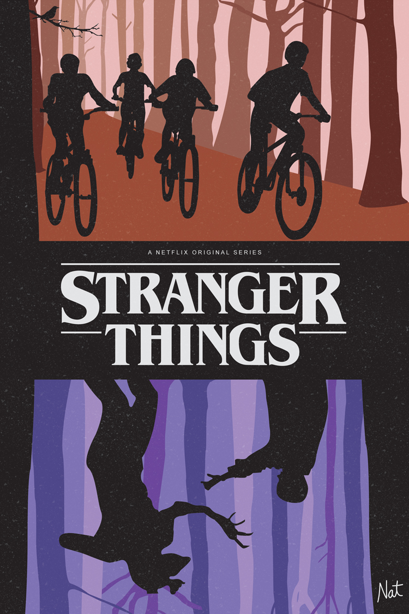
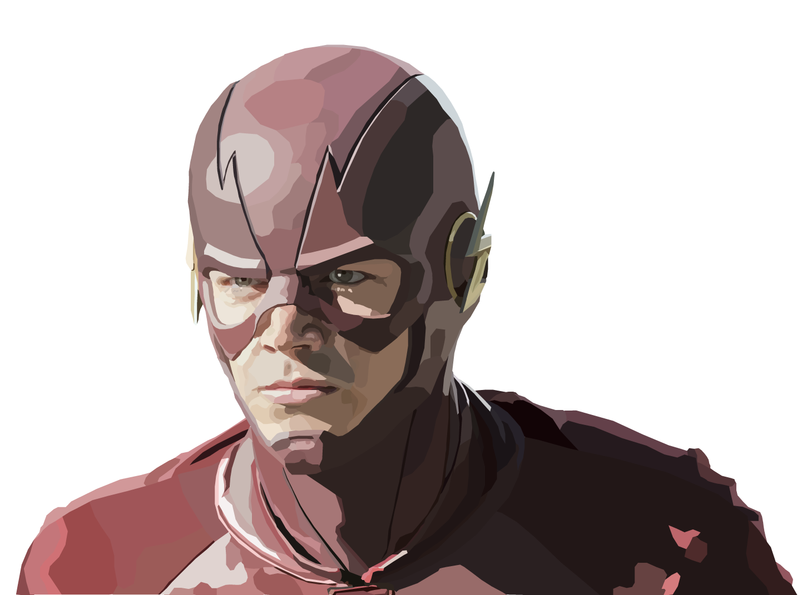
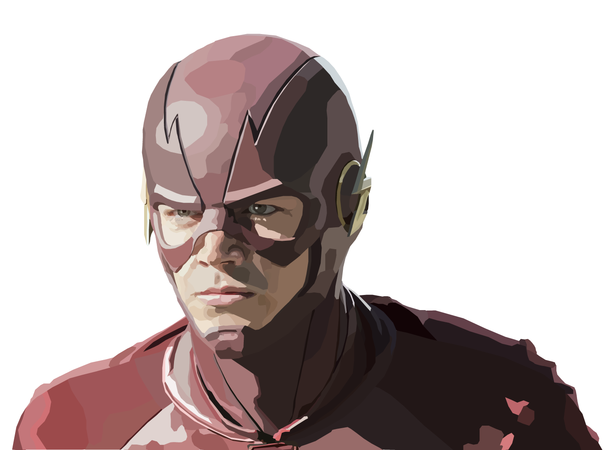

Introductory course on Adobe Creative Suite.
2D Tools is a course where students explore the Adobe Creative Suite. Led by a professor, students are tasked with a new assignment each week that matches with what they learned in class. My best work from the course can be found below.

Stranger Things Poster, Adobe Illustrator
Grant Gustin as Flash, Adobe Illustrator

Main Squeeze Menu, Adobe Illustrator and InDesign
